从编码提效到端到端交付，云通信的人机协作实践¶
一、编码提效不等于交付提效¶
研发协作，是当前AI落地最关键的方向之一。云通信研发团队积极拥抱AI，很早就开始通过AI提效：2024年把代码补全、对话式编程、生成式IDE铺开到日常开发。2025年标准化作业，把规范、领域知识沉淀为宪法、Skill等物料，让AI干活有章可循。2026年已经全面走向Agent化作业模式，正朝端到端交付迈进。
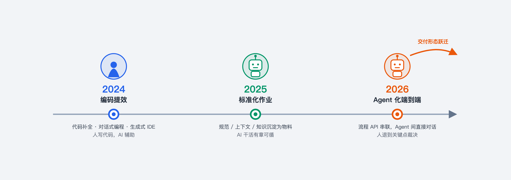
图 1-1 AI Coding 三段演进
三段走下来，出现一个反直觉的结果：AI生成的代码量翻了N倍，但端到端交付的效率却没有同步跃升。一个需求，从提出到上线，交付周期只被压缩了很小一截，提升并不明显。这个反差让我们回头审视整条链路。
经过分析，我们发现：编码提效并不等于交付提效。堵点不在编码本身，而在编码之外仍然由人衔接的节点：1.需求的澄清对齐消耗人力，PRD 要素不全时Agent无法直接开工，人必须补齐上下文。2.代码评审跟不上产出，Agent单次产出代码动辄上万行，最终仍需人逐行审阅，效率难以大幅度提升。3.测试排期成为瓶颈，AI生成量冲上来，人力测试队列立刻堵住。由此可见，只要交付链路里存在由人衔接的节点，该节点就决定了吞吐上限。要真正做到端到端提效，就必须实现全流程Agent协作的研发交付模式。
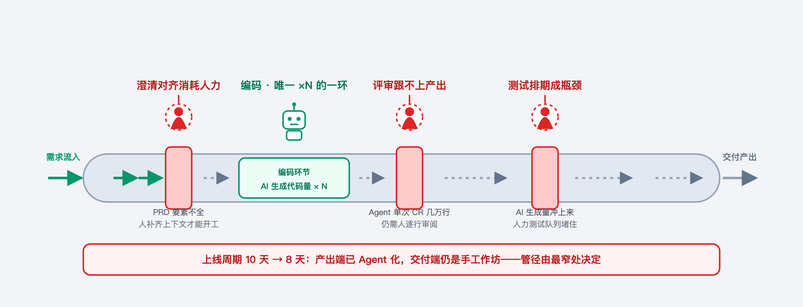
图 1-2 编码与交付对比
而要实现全流程Agent协作的端到端交付模式，有三个关键问题需要解决。
第一个是协作问题——Agent之间如何互相配合。
当前几乎每个团队都在自建Agent与Skill，各自把最关心的部分做到极致：技术Agent编写技术方案时着重输出技术架构与中间件选型，而下游测试Agent则更关心系统边界、可观测性与错误定位方式。每个 Agent在自己阶段的产出看起来都很完整，但协作起来则普遍出现“下游需要的信息，上游没有产出”的情况。这是业界公认的多智能体系统协作难题——上下文丢失（context loss）。
第二个是边界问题——Agent的权限与作业范围如何界定。
Agent的权限与作业范围如何界定，这其实不单纯是一个技术问题，而是一个组织问题——把Agent当成一种新的生产要素放进组织，真正的难题是如何管理它：权限怎么管控、出了问题谁负责、谁来迭代优化。
第三个是落地问题——这套全新的生产模式如何接入现有体系并稳定运行。
两种极端方式都不可取：1.因噎废食——顾虑体系建设周期长、见效慢，就迟迟不引入AI，仍然停留在纯人工作业的模式。2.急于求成——跳过工程体系与知识库建设，把质量完全押注在模型能力上、依赖反复重试为效果兜底。
面对这三个问题，我们给出的答案分别是流水线、数字分身和渐进式落地。
定义标准化作业流水线解决协作问题。手工作坊式的Agent协作依赖个体经验与模型当次发挥，产出不稳定，难以达到企业级生产的要求。我们的解法是为Agent协作定义统一契约，建立流水线作业机制：每一环的输入、输出、交接方式都以规范的形式固化，让研发作业从手工作坊走向标准化流水线。这样做保障了标准统一，明确每一步产出什么、达到什么标准；质量可控，不再依赖个体经验的主观尺度。
利用数字分身明确权限和边界问题。目前业界使用Agent的方式大致可分为两类：一类把AI作为独立新个体，即独立AI工程师；另一类是把AI作为数字分身，将Agent视为负责人在数字世界里的延伸。
我们选择了数字分身的作业方式。原因是一旦把AI当成独立个体，不可避免的要面对三个问题：1. Agent的权限怎么定，能改哪些代码、看哪些数据。2.责任怎么追，研发是高风险的作业，一个小bug就可能变成线上故障，出现问题如何定责。3.谁负责Agent持续迭代，产出资产又怎么被人利用。
由于数字分身利用的都是现有组织的作业方式，可以从一次性解决这个三个问题。1.权限上，它直接复用被延伸人的权限，人和分身被框在同一套既有边界内，不用另起炉灶。2.责任上，每一次提交、每一份产出都与该人挂钩，谁做的、改了什么，清清楚楚。3. 被延伸人负责分身的初始化和迭代建设，分身在作业过程中又可以结构化业务知识，反过来帮人把信息化建设做扎实。
以稳定优先为原则渐进式落地新模式。我们遵循业界共识，以“稳定优先、渐进放开”的原则在现有生产模式中落地全流程Agent协作交付模式。首先稳定压倒一切，最大限度避免线上事故。基于此原则，我们定义了一套需求风险等级的评估体系。一般而言，运维工具、配置类的简单需求风险较小；而核心链路、跨应用协同开发的复杂需求风险较大。我们在需求评估环节设置了门禁环节。每接到一个需求，系统首先评估需求的风险等级（R），根据物料和Harness工程的完备程度评估分身的能力等级（L）。如果当前分身的能力够处理当前风险等级的需求，就通过全流程Agent协作交付；若能力不足仍采用人工作业的方式交付。先限定全流程Agent的作业范围是简单的小需求。等流程跑稳了，物料充足了，再一点点扩大边界。
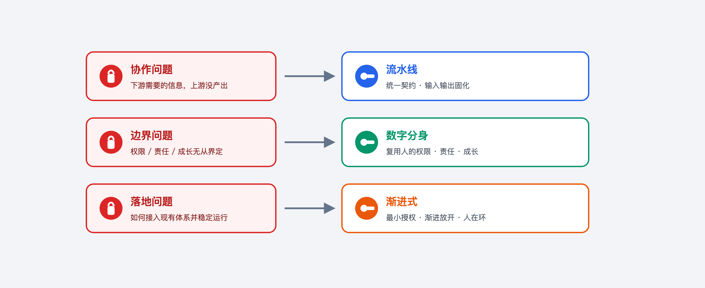
图 1-3 问题到答案
三个答案汇总到一起，就是我们今天在跑的基于数字分身与流水线自动作业的研发交付体系。
二、端到端交付流水线：四层架构与作业闭环¶
2.1 作业闭环¶
基于数字分身与流水线自动作业的研发交付体系可以实现7×24小时不间断作业。数字分身既是需求入口，也是需求的路由器。产品、业务、技术角色均可直接向研发负责人的分身发送需求；分身接单后先做能力裁决，如果以当前能力可以承接需求，则一路从需求对焦 → 技术方案 → 编码 → 自检 → 测试执行下去，整条流水线自闭环；如果当前能力不能承接该需求，则转交对应负责人，走人工开发的模式。
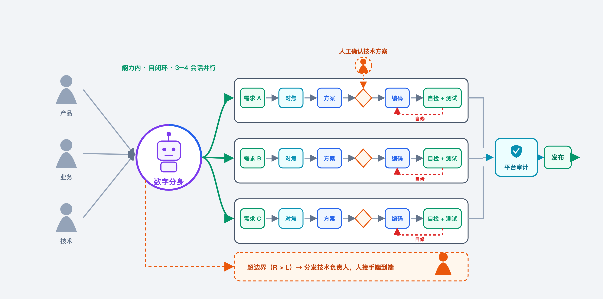
图 2-1 作业闭环
2.2 四层架构¶
数字分身与流水线自动作业的研发交付体系自下而上分四层组成。最底层是工具层，包括钉钉机器人、云端Agent执行平台等基础设施。其上层是应用物料层，为Agent作业提供规则和依据。流水线层是正式的作业环境，各角色Agent在流水线层协同作业。最上层是知识库与审计平台，实现审计归档与知识迭代。
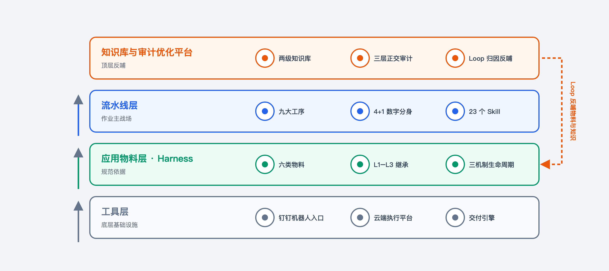
图 2-2 四层架构
工具层的入口是钉钉机器人，业务方在钉钉向研发负责人的数字分身发送工作项。后续的需求澄清、进展同步、关键点裁决均通过钉钉机器人的IM会话与需求方交互。执行环境是云端执行平台，为每个工作项提供独立代码工作区与构建部署等功能，支持各角色Agent的协同作业。交付引擎是流水线的编排中枢，以状态图描述九阶段流程拓扑，负责编排、决策各角色Agent在各阶段的职责与工作内容。
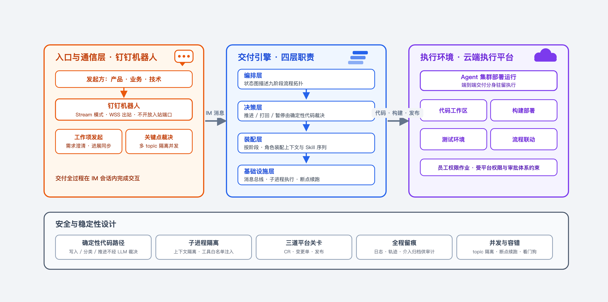
图 2-3 执行链路
应用物料层把每个应用的隐性规范显性化为Agent可加载、可执行的约束物料。包括规则、项目宪法、应用描述、架构文档、历史经验、编码规范等六类内容，以统一索引入口供流水线不同工序按需加载。物料的完备度将直接决定分身的能力等级。
流水线层是作业主战场。通过定义九大工序，把交付链路切成明确的责任段，工序间以交付物驱动推进。执行主体是产品、研发、测试、质检加审计的数字分身，研发负责人Agent作为协调者的角色统筹各数字分身作业。数字分身作业的能力载体是可插拔Skill，不同业务线可以按需替换、增补，保障这套体系可以适配更多的场景。
知识库与审计优化平台在最上层。知识库把散落的原始物料蒸馏为结构化知识单元。审计平台在交付完成后做数据、产物、过程三个维度的检查，发现的问题经归因路由扩充物料和知识库，构成Loop闭环。这一层是让整套体系“越用越强”的关键。
2.3 数字分身的装载¶
分身装载做成三步接入，前置条件齐备的情况下，单人2-3天完成整个系统的初始化：
1.接消息通道——为分身配置IM机器人，具备消息收发与会话交互能力。
2.建执行环境——在云端执行环境中为分身拉起独立执行空间。
3.填领域物料——完备目标应用的应用物料、补充领域知识库内容。
权限模型：分身借用人的权限作业，行为边界受既有平台权限与审批体系约束；系统里看到的，始终是人在提交、人在审批。分身借人的权限，责任始终锚定在人的身上。
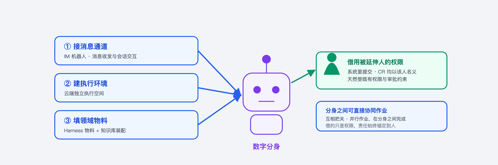
图 2-4 分身装载
装载完成后，组织侧角色随之变化：研发负责人从逐需求执行者转为物料与Skill治理者 + 关键点裁决者。人退到需求确认与技术方案确认两个决策点，中间环节交给分身自主作业。
三、三项关键设计：契约链、交叉质检、渐进式与 Loop¶
这套全流程Agent协作的研发交付模式要真正跑起来，必须同时满足三个性质：
1.信息在工序稳定传递。
2.分身之间能够自行协作把关。
3.整套体系不随使用而衰减。
三者分别对应三项关键设计：
1.基于契约链把每道工序的输入与输出固化为运行时契约，从结构上消除上下文丢失。
2.多分身独立作业、技术负责人Agent统一收口，实现多分身端到端协作。
3.渐进式与Loop把控能力边界的放开节奏与每次交付的审计反哺，使体系越用越强。
3.1 契约链：工序间信息不衰减¶
多智能体协作的核心风险，在于上下文交接过程中的失真。契约链的解法是把每道工序的输入、输出与合格标准提前固化为契约：上一道工序的输出恰好是下一道工序的输入。工序之间不依赖人工转述与对接，信息不会在传递中走样。
契约链把流水线交付链路切分为九段责任明确的工序：
1.需求门控：以需求风险等级（R）对照分身能力等级（L），决定是否承接该需求。
2.需求对焦：通过圆桌对焦补齐需求要素、澄清边界，产出结构化spec.md。
3.技术方案：生成plan.md，经独立评审与人工确认后生效。
4.编码：以tasks.md的批次逐批编码实现，提交代码并自动在测试环境部署。
5.研发自检：由四个视角独立审查，交付自检报告。
6.测试：自动完成用例编写、环境搭建与执行，交付用例与执行报告。
7.平台质检：以平台级合规要求做旁路复核，交付质检报告。
8.审计归档：对整单做三层正交扫描，过程记录入知识库。
9.人工放行：由研发负责人复核产出物后合并上线。
九道工序以交付物驱动推进：任何一道工序的输入都来自上一道工序的正式交付物，每道工序的执行能力由可插拔Skill承载，可按业务线替换与增补。
契约链在工程上落为两条硬约束。第一条是强制交付物：每道工序必须有明确的正式交付物，技术方案阶段交付执行计划（plan.md），编码阶段交付代码与执行记录，自检阶段交付执行报告（check_reports），测试与质检阶段交付用例、执行报告与质检报告。交付物缺失即视为工序未完成，不允许向下游推进。任何一环要继续流转，必须先拿出一份可被下游直接消费的正式产物。
第二条是交付物驱动的运行时校验。流水线对每次交接做三重校验——标签格式、修饰符、发送者身份，防止Agent以口头声明的方式自行推进流水线。被打回的交付物触发上游返工，就丧失了流水线的推进效力。保证产出不达标就当场打回重做，坏的半成品不往下游工序传递。
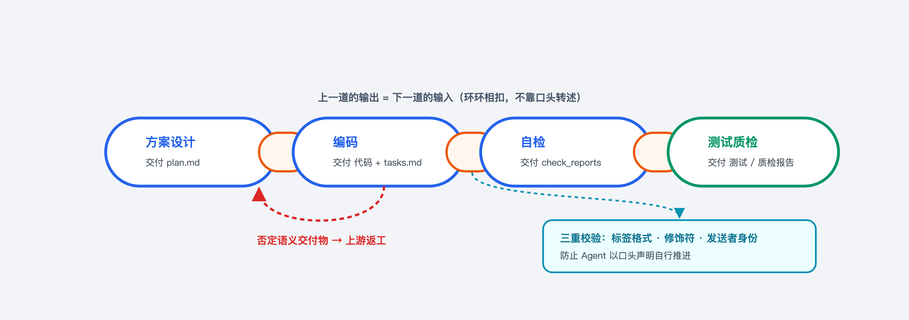
图 3-1 契约链
契约链不是一次设计完成的静态规范，而是随交付经验持续生长的活约束。审计曾发现某类需求在技术方案环节反复回改、对话轮次异常偏高。问题的根因是物料层的规则模板缺少对应章节，Agent进入执行阶段才发现要素不全，只能回改方案再改任务，循环多次。待补齐该规则模板后，同类需求的返工显著减少。每一单交付都在为流水线补充更贴合实际的约束，这正是契约链与Loop的配合方式。
3.2 多分身协作：独立作业，技术负责人 Agent 收口¶
多分身通过协作配合，实现端到端交付，从而减少人工介入。以质量保障环节为例，端到端交付要把质量校验与返工交给流水线自动执行。解决代码质量巡检、测试和验证环节人力不足的问题。
由于模型层面的偏见，研发分身审查自身产出时，天然倾向于判定交付物符合预期。为防止自查存在系统性的偏差，需要通过多分身从局外视角审查，才能得到可靠判断。
首先在自检工序中，产品分身、研发分身、测试分身、安全分身分别开启自己的会话、使用自己的工作区，不共享上下文，只加载diff、spec、规则与知识库。产品分身核对需求完成度；研发分身检查代码健壮性；安全分身审查修改的合规性；测试分身自动生成用例、执行测试验证，评估功能可靠性。四个视角各自输出带证据的结论。
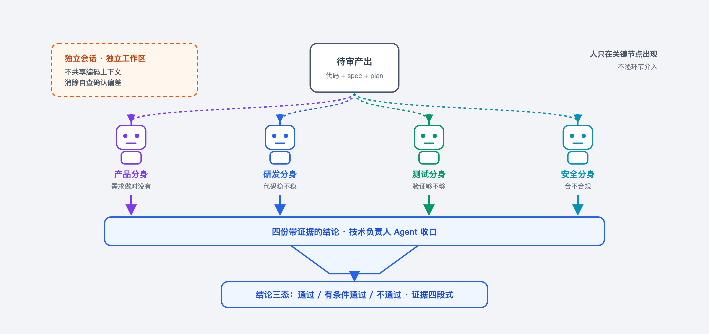
图 3-2 交叉质检
然后是技术负责人Agent收口。四个视角的报告汇总到技术负责人Agent，对照声明式检查点逐项核验，给出最终判断：通过或打回。收口结论若为打回，则触发编码分身返工。直至四个分身均对交付物验收通过，再进入下一环节。
至此，质检一环既不需要人逐行评审，也不需要测试人员手动介入，长期卡住交付的人工瓶颈在这一环被机制正面解开。
3.3 渐进式与 Loop：体系不随使用衰减¶
为防止整体系统随时间推移的逐渐腐烂，需要把能力渐进式放开与Loop归因反哺融合在作业过程中，推动能力边界向外不断扩展。
在数字分身的交付体系中，每个需求进入时评估风险等级（R），评估维度包括模块跨度、是否核心链路、有无高性能要求、是否涉及资金等高风险场景。分身的能力等级（L）由知识库与应用物料的完备度决定；R ≤ L才接单，R > L则转交对应负责人。渐进式的能力边界可以动态修改分身的能力等级，保障这套机制的持续有效性。连续成功若干次则可以提升数字分身的能力等级。如果在作业过程中出现多次交付物不符合预期，则需要降低数字分身的能力等级，将门禁收紧。实践发现，许多原本难以承接的复杂需求，随着一轮轮迭代使知识库与物料不断完善，也能够拆分成若干子需求交给数字分身完成。数字分身的能力范围会随需求的不断交付持续外扩。
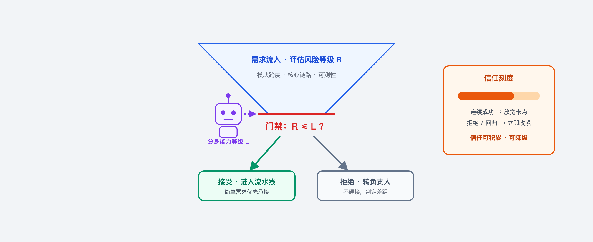
图 3-3 渐进式需求门控
数字分身的能力不断外扩依赖于Loop机制，把每次交付过程沉淀的数字资产转化为下次需求执行的输入。数字分身每完成一次需求交付，在审计归档工序就自动执行一次审计。主要包括三层正交扫描：
1.数据层核对需求的规格与方案产物是否齐全。
2.产物层对各过程产物做跨文件联合分析，检测工序间配合度。
3.过程层从会话日志还原执行轨迹，回看token消耗、人工介入次数等效率指标。
审计的输出不是打分，而是归因。归因路由分三条：
1.规则与模板缺陷路由至应用物料迭代。
2.技能与工具问题路由至工具链整改。
3.知识缺口与错误进入知识库台账，分批建设为结构化知识。
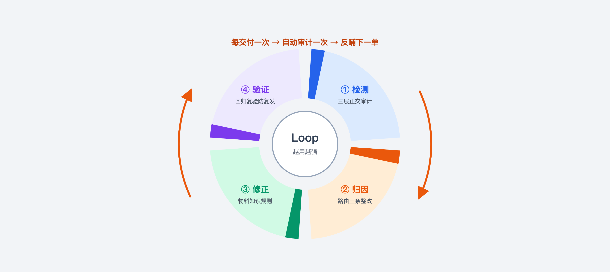
图 3-4 Loop 闭环
修正后的物料、知识与规则经验证后全局生效，并在下一次审计与回归评测中复验。每一次问题都被沉淀为一条能够防止复发的规则。检测、归因、修正、验证四步循环往复，使得体系随使用持续变强。
四、一个简单需求的端到端交付之旅¶
本章看一单真实需求怎么跑完整条流水线（业务信息已脱敏）。
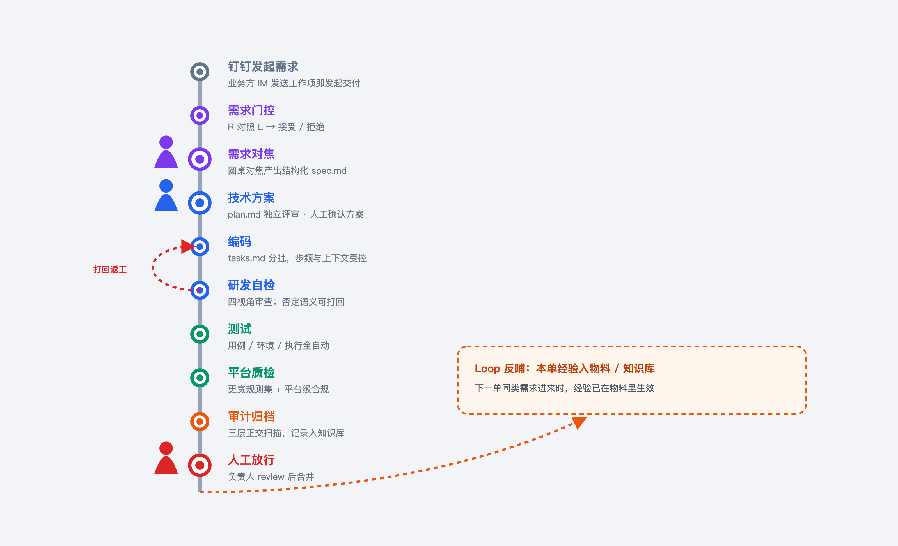
图 4-1 端到端全链路
需求本身属于典型的“简单需求”——单模块、非核心链路、可自测。业务方在钉钉里把需求发给分身，分身接单后先做需求门控裁决：用需求的风险等级对照自身能力等级，输出接受或拒绝。这一单裁决为接受，进入流水线。
图 4-2 钉钉发起需求
图 4-3 需求门控
之后是需求对焦与技术方案阶段。圆桌对焦产出结构化spec.md，补齐需求要素、澄清边界。技术方案生成plan.md，先由测试角色独立评审，再由技术负责人做方案确认。技术负责人需要确认三件事：
1.方案是否完整覆盖spec承诺的场景与边界。
2.架构与中间件选型是否符合应用约束。
3.风险与回滚路径是否明确。
确认结论留痕，供审计归档。确认不通过时打回方案工序修订，修订后重新评审与确认，方案级偏差由此被锁定在编码开始之前，不会到自检或测试阶段才暴露返工。
图 4-4 技术方案确认
编码阶段以tasks.md把变更拆分为若干批次，每批次的步频与上下文复杂度控制在模型稳定处理范围内。编码完成后进入研发自检，四视角依次运行。这一单在自检阶段被打回过一次——一处变更超出tasks 定义范围，研发分身重做。坏的半成品不允许流到下一道工序。
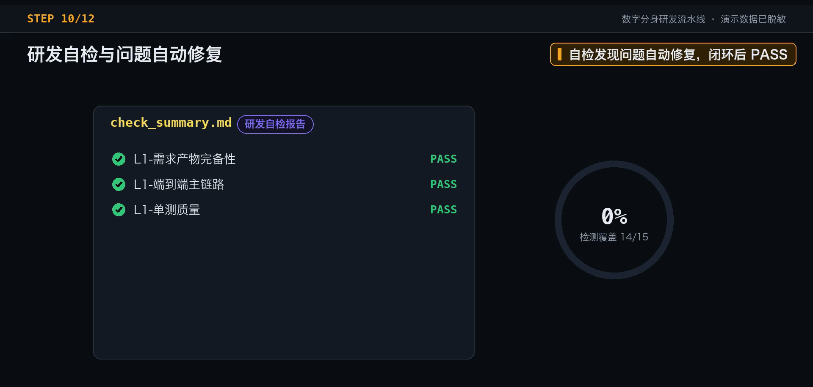
图 4-5 研发自检
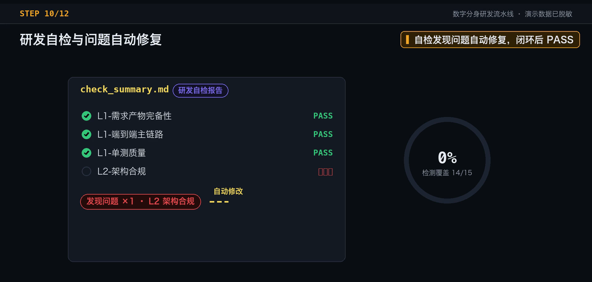
图 4-6 自检打回
测试阶段全自动执行——用例自动生成、环境自动搭建、执行自动运行。本次全部执行通过。如果一处接口返回不符合预期，测试分身定位根因、回传研发分身修复，再跑一轮自动化测试。直至所有测试用例运行通过。
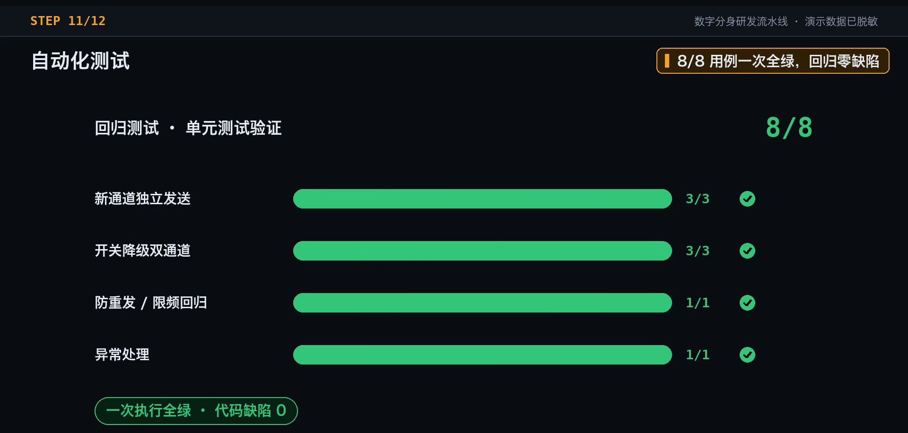
图 4-7 测试全自动
最后是审计归档。审计做三层正交扫描，过程记录归档进知识库——下一单同类需求进来时，这一单的经验就已经在物料里生效了。归档完成后进入“待交付”状态：代码已提交分支、测试已通过、审查已完成。
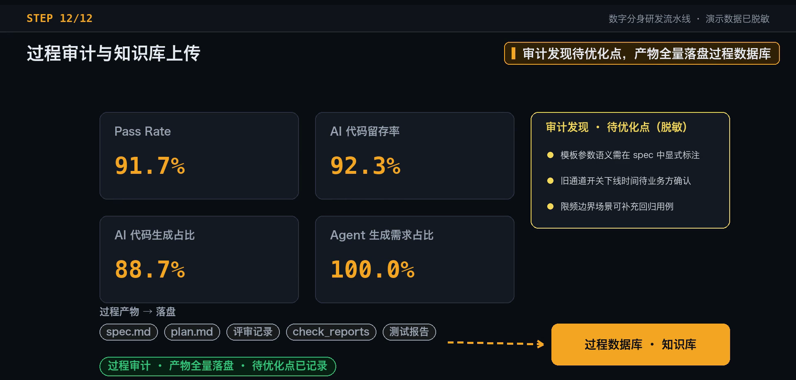
图 4-8 产物审计
可接管、可追溯、可验收——每一步由谁执行、依据什么执行、结果如何，全程留痕、事后可查。这是我们敢把数字分身真正放进生产环境的根本原因。
五、未来规划与展望¶
目前简单需求的端到端交付已经稳定跑通，我们未来的规划投入主要聚集在三个方向。
方向一 · 能力边界持续外扩——物料与经验的积累会推动分身能承接的需求不断变复杂。目标是让“从简单需求起步、边界一步步外扩”，把更多跨模块、跨应用的复杂需求也纳进来。
方向二 · 成本治理——成本底线是端到端做一个需求不能比人工更贵。主要的方案是模型分档、上下文管理、错峰执行，控制让交付成本不随需求量线性上涨。
方向三 · 适配组织形态演进——织形态也可能被重构，怎么排兵布阵、怎么衡量产出，都是新课题。后续有可能建立一个工程师将带着若干数字分身，组成人机混编的小团队的交付模式，使团队吞吐量不在受限于人头数。
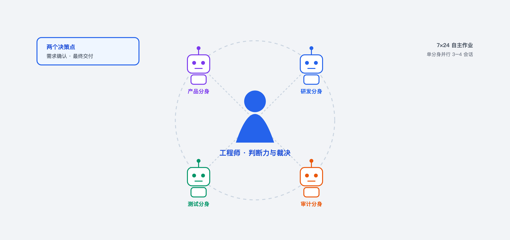
图 5-1 人机混编的小团队
今天大模型正从通用能力走向企业生产落地。模型可以把通用知识学得很透彻，但你所负责领域的知识往往是非标、私有的。如架构演进、历史遗留、术语黑话等内容，通用大模型不可能一次就知道。所以真正靠得住的不是模型能力，而是围绕模型建起的一整套交付体系与资产。通过定义面向AI Native的标准作业方式，利用渐进式的迭代演进模式，探索出一条适配自身业务特性的人机协作机制，逐步从编码提效走向端到端交付。